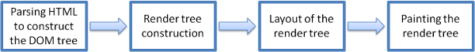
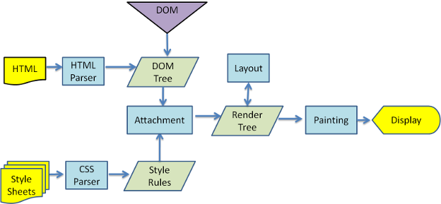
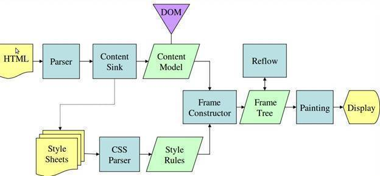

1.CSS和JS在网页中的放置顺序
css的使用通过<link>标签引入样式表，放置在<head>标签里，防止渲染时出现白屏。
js的使用通过<script></script>标签引入js文件，放置在</body>之前，防止阻塞<script>后面内容的渲染。
2.白屏和FOUC
白屏：对于IE及Chrome等浏览器，需将html内容及引入的CSS内容都加载完成后，浏览器才会对页面代码进行渲染呈现到用户面前，此时如果html内容很多，浏览器处理请求、加载需要较长时间，会出现浏览器一段时间内无内容呈现给用户，就是典型的白屏效果。
FOUC:对于firefox浏览器，如果CSS放置在底部，firebox会将html结构先展示到页面上，然后再读取CSS并对html结构进行渲染，对相关元素进行渲染之后会刷新页面，表现为html内容无样式内容闪烁，随着页面的不断刷新，样式逐渐的展示出来。
3.async和defer的作用是什么？有什么区别？
async和defer都是<script>标签的布尔属性，都只对外部脚本文件有效。
其中对有async的script脚本文件，当浏览器加载到该脚本文件时，会同时加载后续的文档，也就是说加载该脚本文件和加载后续文档同时进行。正常情况下，对于没有async的脚本文件，浏览器会停止加载后续文档，等脚本文件下载并执行后才会加载后续文档。
而有defer的脚本文件，当浏览器加载到该脚本文件时，会同时加载后续的文档，而且会等文档全部加载完成才会执行该脚本文件。
它们的区别就是defer等到文档解析显示之后执行，有顺序，而async不保证顺序。
4.网页的渲染机制
网页通过浏览器展示在我们面前，说网页的渲染机制就是说浏览器怎么渲染页面的。市面上浏览器主流浏览器chrome，firefox，ie，safari，opera，虽然品牌各不相同，但它们思路的渲染流程大致相同，只不过在有些细节方面有差异。
浏览器渲染的流程

- 浏览器会先解析html文档，根据DOM节点构建“content tree”；
- 浏览器解析css文本，获取样式，将样式和HTML中的dom节点对应，构建render tree;render tree由可视化元素节点和对应的样式组成，同时也确定了元素在页面上展现的顺序；
- 构建好render tree 树后，浏览器会根据渲染树进行布局，计算好每个节点的位置和大小；
- 最后就是把元素节点根据前面的处理结果绘制在浏览器的屏幕上；
具体步骤
有了大致的流程之后，接下来就是怎么实现了。
chrome等

- 解析 HTML 标签, 构建 DOM 树
- 解析 CSS 标签, 构建 CSSOM 树
- 把 DOM 和 CSSOM 组合成 渲染树 (render tree)
- 在渲染树的基础上进行布局, 计算每个节点的几何结构
- 把每个节点绘制到屏幕上 (painting)
firefox

- 解析 HTML 标签到Content Sink
- 这时，先加载Content Sink里面的内容，页面上会显示一个无样式的内容
- 循环加载css样式，每次加载一部分css样式后，都会重现渲染页面